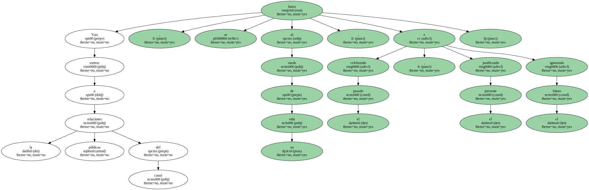
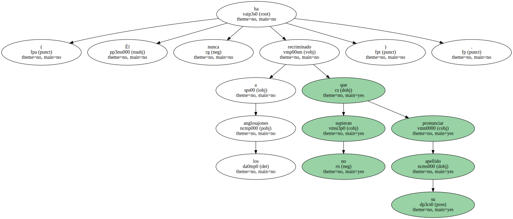
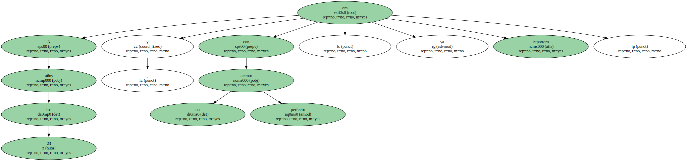
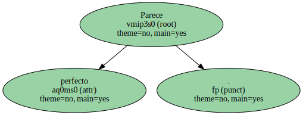

Nada más traspasar el umbral del número 10 de Fleet Place , en el distrito financiero de Londres , se hiela el corazón.

En esta recepción donde se lee The Wall Street Journal en lugar de Diez Minutos hace mucho frío.
En la sexta planta , salen a saludar lemas como témpanos : Viva , respire y duerma los negocios ; Amontone dinero viendo la televisión ; Conozca la respuesta antes de que nadie sepa la pregunta.
Parece que sólo los pingüinos moran en los estudios de la televisión financiera CNBC.
Hasta que llega Juan Señor , un presentador con sentimientos.
Tras sortear a la relaciones públicas del canal , se lanza al ruedo de su vida , celebrando el pasado , justificando el presente e ignorando el futuro.
" Salí de Barcelona un día de San Fermín para irme a estudiar a Estados Unidos " cuenta.
" No recuerdo bien si tenía 16 o 17 años , pero nunca se me olvidará cómo se reían mis compañeros de clase de mi acento en inglés ".
( Él nunca ha recriminado a los anglosajones que no supieran pronunciar su apellido ).
A los 23 años , y con un acento perfecto , ya era reportero.
Juan se tomó muy en serio lo que le decía su padre , " tu país es el mundo " , y durante seis años vio " lo mejor y lo peor del ser humano " en Haití , Yugoslavia o la Guerra del Golfo.
La intensidad de esos momentos caló de tal forma que cinco años presentando desde Londres el programa matutino de noticias económicas Europe Today no le ha apagado la llama del corazón.
Dicen que su experiencia filmando la miseria humana en Centroamérica o escribiendo sobre el amor en Sarajevo se nota en sus boletines.
Él va más allá : dice que hace " un servicio público " , que la gente no tiene ni idea de economía cuando " se vive como quieren las empresas ".

Tiene razón.
Y cinco hijos.
Y sólo 32 años.
Parece perfecto.
¿ Estará fingiendo ?.
Da la impresión de ser auténtico.
Como sus compatriotas , detesta Londres por la calidad de sus relaciones humanas.